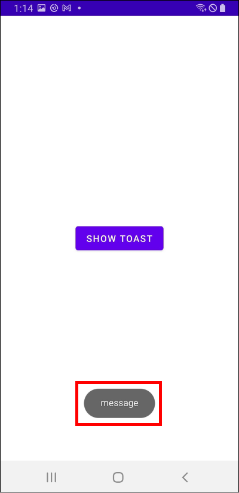
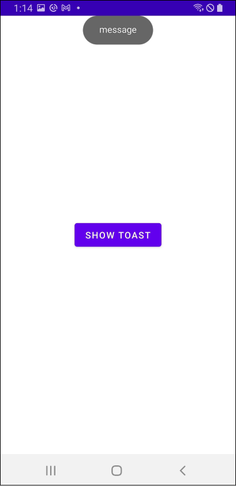
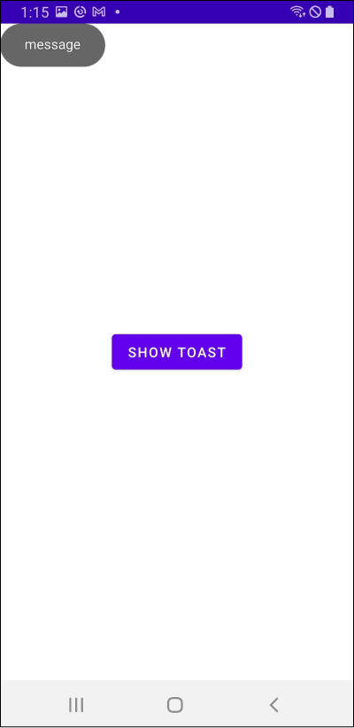
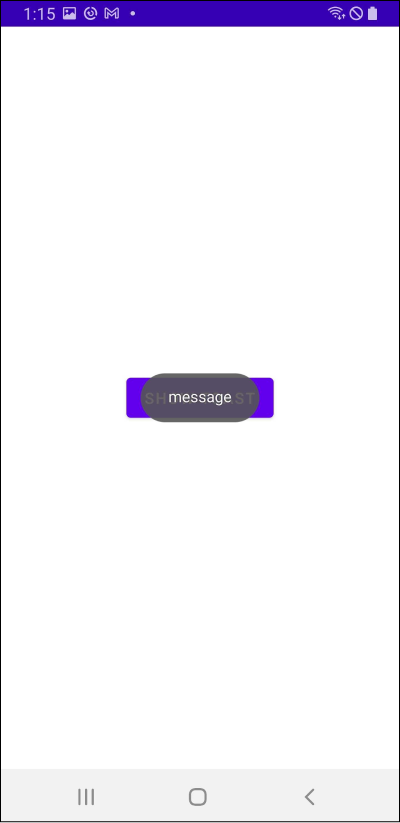

[Android] Toast
토스트
토스트(Toast)는 사용자에게 메시지를 알려주기 위한 작은 박스입니다.

토스트는 액티비티에서 다음과 같이 사용합니다.
1 | class MainActivity : AppCompatActivity() { |
makeText()의 세 번째 인자로 토스트 메시지의 지속 기간을 설정할 수 있으며, 값으로는 Toast.LENGTH_SHORT와 Toast.LENGTH_LONG이 올 수 있습니다.
프래그먼트에서는 다음과 같이 사용합니다.
1 | class MainFragment : Fragment() { |
위치 변경
Toast클래스의 setGravity()메소드를 사용하면 토스트의 위치를 변경할 수 있습니다.
토스트 위치를 화면 위쪽에 위치시켜보겠습니다.
1 | val toast = Toast.makeText(this@MainActivity, "message", Toast.LENGTH_SHORT) |

위쪽과 왼쪽에 위치시킬 수도 있습니다.
1 | val toast = Toast.makeText(this@MainActivity, "message", Toast.LENGTH_SHORT) |

x축, y축으로 offset을 줄 수도 있습니다.
1 | val toast = Toast.makeText(this@MainActivity, "message", Toast.LENGTH_SHORT) |

화면 중앙에 위치시킬 수도 있습니다.
1 | val toast = Toast.makeText(this@MainActivity, "message", Toast.LENGTH_SHORT) |
